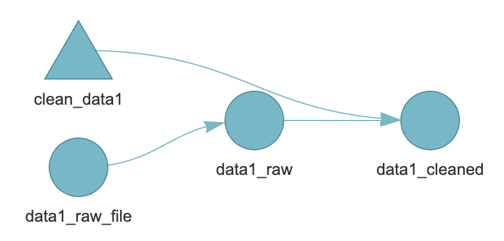
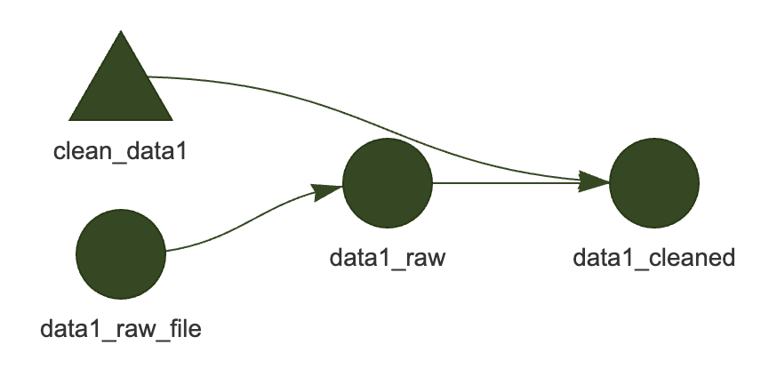
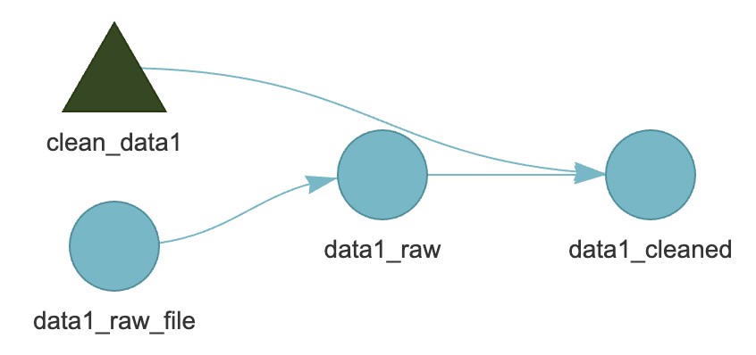
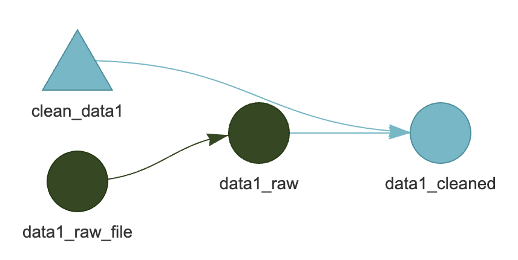

graph LR
style Graph fill:#FFFFFF00,stroke:#000000;
subgraph Graph
direction LR
xa60862c4ab4296bb(["raw_accident_bike"]):::skipped --> x034caa8952fea0bc(["accident_bike"]):::skipped
x6d55c198484f4a32(["demand_supply_file"]):::skipped --> xce43a680ab7f20d8(["demand_supply"]):::skipped
x6b88c7f0a7cfeae2(["res_model"]):::skipped --> x6d55c198484f4a32(["demand_supply_file"]):::skipped
xae87dc67ba338d4f(["equilibrium_file"]):::skipped --> xa24c4be63b494044(["equilibrium"]):::skipped
x6b88c7f0a7cfeae2(["res_model"]):::skipped --> xae87dc67ba338d4f(["equilibrium_file"]):::skipped
x02d319b13cb530b9(["jl_file_main"]):::skipped --> xad77b747e8ecd697(["jl_main"]):::skipped
x693460ba53a4c0cd(["jl_file_model"]):::skipped --> x25bf76549192ec22(["jl_model"]):::skipped
x034caa8952fea0bc(["accident_bike"]):::skipped --> x9470f51581cb7d73(["logit_hospital_death"]):::skipped
xce43a680ab7f20d8(["demand_supply"]):::skipped --> x24abe6175c545e8a(["manuscript"]):::skipped
xb033ae8b49095a26(["num_accident"]):::skipped --> x24abe6175c545e8a(["manuscript"]):::skipped
xa24c4be63b494044(["equilibrium"]):::skipped --> x24abe6175c545e8a(["manuscript"]):::skipped
x9470f51581cb7d73(["logit_hospital_death"]):::skipped --> x24abe6175c545e8a(["manuscript"]):::skipped
x5b3deba9281c9212(["fns_graphics"]):::skipped --> x24abe6175c545e8a(["manuscript"]):::skipped
x41180a2d7b7b3c28(["parameters"]):::skipped --> x24abe6175c545e8a(["manuscript"]):::skipped
xb033ae8b49095a26(["num_accident"]):::skipped --> xb7f5b6c7e9273aa9(["manuscript_book"]):::skipped
xce43a680ab7f20d8(["demand_supply"]):::skipped --> xb7f5b6c7e9273aa9(["manuscript_book"]):::skipped
xa24c4be63b494044(["equilibrium"]):::skipped --> xb7f5b6c7e9273aa9(["manuscript_book"]):::skipped
x9470f51581cb7d73(["logit_hospital_death"]):::skipped --> xb7f5b6c7e9273aa9(["manuscript_book"]):::skipped
x5b3deba9281c9212(["fns_graphics"]):::skipped --> xb7f5b6c7e9273aa9(["manuscript_book"]):::skipped
x41180a2d7b7b3c28(["parameters"]):::skipped --> xb7f5b6c7e9273aa9(["manuscript_book"]):::skipped
x034caa8952fea0bc(["accident_bike"]):::skipped --> xb033ae8b49095a26(["num_accident"]):::skipped
xfeeaf8513320133e(["parameters_file"]):::skipped --> x41180a2d7b7b3c28(["parameters"]):::skipped
x6b88c7f0a7cfeae2(["res_model"]):::skipped --> xfeeaf8513320133e(["parameters_file"]):::skipped
xee0a5a7de02f740f(["dir_raw_accident_bike"]):::skipped --> xa60862c4ab4296bb(["raw_accident_bike"]):::skipped
x02d319b13cb530b9(["jl_file_main"]):::skipped --> x6b88c7f0a7cfeae2(["res_model"]):::skipped
xad77b747e8ecd697(["jl_main"]):::skipped --> x6b88c7f0a7cfeae2(["res_model"]):::skipped
x25bf76549192ec22(["jl_model"]):::skipped --> x6b88c7f0a7cfeae2(["res_model"]):::skipped
x034caa8952fea0bc(["accident_bike"]):::skipped --> x5a3744590d99f661(["website"]):::skipped
x5b3deba9281c9212(["fns_graphics"]):::skipped --> x5a3744590d99f661(["website"]):::skipped
end
Let {targets} Take the Lead
{targets} is an R package for building research workflows. Its primary feature is managing R objects (data, functions, and results) and their dependencies, automatically recalculating downstream objects when upstream objects change. This allows you to maintain reproducibility throughout your research process.
When combined with Quarto, you can manage all aspects of your research workflow in a single pipeline—from interim reports and slides to writing the final manuscript. This article explains a Quarto + {targets} research workflow I actively use in my own research. While the final pipeline is a clean and simple workflow, I also add flexibility for experimentation and iteration.
The code is available here. Please refer to it for code examples and directory structure.
Workflow
- Set up initial configuration in
_targets.R - Define data cleaning in
R/tar_data.R - Configure the website in
_quarto.yml - Experiment with data analysis and models in
playground/yymmdd_*/index.qmd - Summarize interim results in slides
slide/yymmdd_*/index.qmd - Repeat steps 3-5. Incorporate key results into the pipeline via
R/tar_fact.R,R/tar_model.R - Write the manuscript with final results in
manuscript/*.qmd
By the time you finish writing your manuscript, you should have a pipeline like the one below. This was generated using targets::tar_mermaid().
Before explaining each part of the workflow, let’s cover the basics of {targets}.
{targets} Basics
The official tutorial is the best way to learn {targets} basics, but in practice, we often use the extended syntax from {tarchetypes}. Here, I’ll explain a minimal usage based on {tarchetypes} syntax. This tutorial was helpful for transitioning from {targets} to {tarchetypes}.
The Three Basic Elements
The philosophy of {targets} divides research workflows into three elements: files, functions, and objects.
- Files: Objects defined with
tar_file()that hold file paths. They also store file size and timestamp, so even if the path hasn’t changed, if the content changes, dependent parts of the pipeline will be recalculated. - Objects: Variables, data frames, and other R objects.
- Functions: R functions. All inputs that the function depends on must be specified, and the output must be a file or object. This makes dependencies explicit.
Conceptually, you start with files, read them to create objects, and then use those objects to run functions that create new objects. These elements are defined within tar_plan().
clean_data1 <- function(data1_raw) {
data1_raw |>
filter(!is.na(col1))
}
tar_plan(
tar_file(data1_raw_file, "path/to/file/data1.csv"),
data1_raw = readr::read_csv(data1_raw_file),
data1_cleaned = clean_data1(data1_raw),
)In the example above, data1_raw_file is a file, data1_raw and data1_cleaned are objects, and readr::read_csv and clean_data1() are functions.
Execution and Dependency Management
You can visualize your defined pipeline with targets::tar_visnetwork().

Here, triangles represent functions, and circles represent files and objects. The light blue color indicates parts of the pipeline that haven’t been executed yet. When you run targets::tar_make():

Successfully executed parts turn gray. If you change the contents of data1.csv (data1_raw_file):

Parts with dependencies return to the unexecuted state. Of course, running targets::tar_make() again will recalculate the dependent parts:
Similarly, if you change the contents of the clean_data1() function:

This is the basic workflow of {targets}: define pipelines in tar_plan(), then execute them with tar_make().
Quarto + {targets} Workflow
1. Initial Configuration in _targets.R
_targets.R
library(targets)
library(tarchetypes)
suppressPackageStartupMessages(library(dplyr))
options(
tidyverse.quiet = TRUE,
dplyr.summarise.inform = FALSE,
readr.show_col_types = FALSE
)
# here::here() returns an absolute path, which then gets stored in tar_meta and
# becomes computer-specific (i.e. /Users/andrew/Research/blah/thing.Rmd).
# There's no way to get a relative path directly out of here::here(), but
# fs::path_rel() works fine with it (see
# https://github.com/r-lib/here/issues/36#issuecomment-530894167)
here_rel <- function(...) {
fs::path_rel(here::here(...))
}
tar_source()
#-------------------------------------------------------------------------------
# Main Pipeline
#-------------------------------------------------------------------------------
tar_plan(
# Data Preparation ----------
data,
# Analysis ------------------
fact,
model,
# Graphics ------------------
fns_graphics = lst(theme_proj, color_base, color_accent, scale_fill_gender),
# Manuscript ----------------
tar_quarto(manuscript_book, path = "manuscript", quiet = FALSE),
tar_quarto(manuscript, path = "manuscript/main.qmd", quiet = FALSE),
# Website -------------------
tar_quarto(
website,
path = ".",
quiet = FALSE,
extra_files = here_rel("manuscript", "main.pdf")
)
)The three crucial parts are:
tar_source()
Specifies the directory containing source code for functions used in your pipeline. By default, the R/ directory is specified.
tar_plan()
Defines the pipeline. You don’t need to include every pipeline element here—you can define pipelines in files loaded via tar_source() and call them. For example, the data pipeline is defined in R/tar_data.R:
R/tar_data.R
R/tar_data.R
data <- tar_plan(
dir_raw_accident_bike = download_accident_bike(here_rel(
"data",
"accident_bike"
)),
raw_accident_bike = load_accident_bike(dir_raw_accident_bike),
accident_bike = clean_accident_bike(raw_accident_bike)
)
download_accident_bike <- function(dir_file) {
url_base <- "https://datos.madrid.es/egob/catalogo/300228-%s-accidentes-trafico-detalle.csv"
years <- 2019:2023
keys <- c(19, 21, 22, 24, 26) #URL becomes caos since 2020
if (!dir.exists(dir_file)) {
dir.create(dir_file)
}
tibble(
year = 2019:2023,
key = c(19, 21, 22, 24, 26)
) |>
purrr::pwalk(\(year, key) {
url <- sprintf(url_base, key)
download.file(url, destfile = file.path(dir_file, paste0(year, ".txt")))
})
return(dir_file)
}
load_accident_bike <- function(dir_raw_accident_bike) {
purrr::map(
2019:2023,
~ readr::read_delim(
file.path(dir_raw_accident_bike, paste0(.x, ".txt")),
delim = ";"
)
) |>
bind_rows()
}
clean_accident_bike <- function(raw_accident_bike) {
raw_accident_bike |>
rename(
id = num_expediente,
date = fecha,
hms = hora,
street = localizacion,
num_street = numero,
code_district = cod_distrito,
district = distrito,
type_accident = tipo_accidente,
weather = estado_meteorológico,
type_vehicle = tipo_vehiculo,
type_person = tipo_persona,
age_c = rango_edad,
gender = sexo,
code_injury8 = cod_lesividad,
injury8 = lesividad,
coord_x = coordenada_x_utm,
coord_y = coordenada_y_utm,
positive_alcohol = positiva_alcohol,
positive_drug = positiva_droga
) |>
mutate(
time = lubridate::dmy_hms(paste0(date, hms), tz = "Europe/Madrid"),
district = na_if(district, "NULL"),
district = stringr::str_to_title(district),
weather = recode_factor(
weather,
"Despejado" = "sunny",
"Nublado" = "cloud",
"Lluvia débil" = "soft rain",
"Lluvia intensa" = "hard rain",
"LLuvia intensa" = "hard rain",
"Nevando" = "snow",
"Granizando" = "hail",
"Se desconoce" = NULL,
"NULL" = NULL
),
type_person = recode_factor(
type_person,
"Conductor" = "Driver",
"Pasajero" = "Passenger",
"Peatón" = "Pedestrian",
"NULL" = NULL
),
age_c = recode_factor(
age_c,
"Menor de 5 años" = "<5",
"De 6 a 9 años" = "6-9",
"De 10 a 14 años" = "10-14",
"De 15 a 17 años" = "15-17",
"De 18 a 20 años" = "18-20",
"De 21 a 24 años" = "21-24",
"De 25 a 29 años" = "25-29",
"De 30 a 34 años" = "30-34",
"De 35 a 39 años" = "35-39",
"De 40 a 44 años" = "40-44",
"De 45 a 49 años" = "45-49",
"De 50 a 54 años" = "50-54",
"De 55 a 59 años" = "55-59",
"De 60 a 64 años" = "60-64",
"De 65 a 69 años" = "65-69",
"De 70 a 74 años" = "70-74",
"Más de 74 años" = ">74",
"Desconocido" = NULL
),
gender = recode_factor(
gender,
"Hombre" = "Men",
"Mujer" = "Women",
"Desconocido" = NULL
),
injury8 = recode_factor(
injury8,
"Sin asistencia sanitaria" = "No health care",
"Asistencia sanitaria sólo en el lugar del accidente" = "Healthcare only at the place of the accident",
"Asistencia sanitaria ambulatoria con posterioridad" = "Subsequent outpatient health care",
"Asistencia sanitaria inmediata en centro de salud o mutua" = "Immediate health care at a health center",
"Atención en urgencias sin posterior ingreso" = "Emergency care without subsequent hospitalization",
"Ingreso superior a 24 horas" = "Hospitalization after 24 hours",
"Ingreso inferior o igual a 24 horas" = "Hospitalization within 24 hours",
"Fallecido 24 horas" = "Died within 24 hours",
"Se desconoce" = NULL,
"NULL" = NULL
),
positive_alcohol = positive_alcohol == "S",
positive_drug = positive_drug == "S",
is_died = injury8 == "Died within 24 hours",
is_hospitalized = injury8 %in%
c(
"Hospitalization after 24 hours",
"Hospitalization within 24 hours",
"Died within 24 hours"
)
) |>
filter(!is.na(type_person), !is.na(gender))
}here_rel()
here::here() is a function for specifying relative paths based on the project root directory. This ensures you don’t need to change paths if the project root directory changes. However, using here::here() within _targets.R saves absolute paths, which causes problems when sharing with others. Therefore, we use a function that maintains the convenience of here::here() while saving relative paths. This part is based on Dr. Andrew Heiss’s code.
2. Define Data Cleaning
Define your data cleaning pipeline. See the code here for details:
R/tar_data.R
R/tar_data.R
data <- tar_plan(
dir_raw_accident_bike = download_accident_bike(here_rel(
"data",
"accident_bike"
)),
raw_accident_bike = load_accident_bike(dir_raw_accident_bike),
accident_bike = clean_accident_bike(raw_accident_bike)
)
download_accident_bike <- function(dir_file) {
url_base <- "https://datos.madrid.es/egob/catalogo/300228-%s-accidentes-trafico-detalle.csv"
years <- 2019:2023
keys <- c(19, 21, 22, 24, 26) #URL becomes caos since 2020
if (!dir.exists(dir_file)) {
dir.create(dir_file)
}
tibble(
year = 2019:2023,
key = c(19, 21, 22, 24, 26)
) |>
purrr::pwalk(\(year, key) {
url <- sprintf(url_base, key)
download.file(url, destfile = file.path(dir_file, paste0(year, ".txt")))
})
return(dir_file)
}
load_accident_bike <- function(dir_raw_accident_bike) {
purrr::map(
2019:2023,
~ readr::read_delim(
file.path(dir_raw_accident_bike, paste0(.x, ".txt")),
delim = ";"
)
) |>
bind_rows()
}
clean_accident_bike <- function(raw_accident_bike) {
raw_accident_bike |>
rename(
id = num_expediente,
date = fecha,
hms = hora,
street = localizacion,
num_street = numero,
code_district = cod_distrito,
district = distrito,
type_accident = tipo_accidente,
weather = estado_meteorológico,
type_vehicle = tipo_vehiculo,
type_person = tipo_persona,
age_c = rango_edad,
gender = sexo,
code_injury8 = cod_lesividad,
injury8 = lesividad,
coord_x = coordenada_x_utm,
coord_y = coordenada_y_utm,
positive_alcohol = positiva_alcohol,
positive_drug = positiva_droga
) |>
mutate(
time = lubridate::dmy_hms(paste0(date, hms), tz = "Europe/Madrid"),
district = na_if(district, "NULL"),
district = stringr::str_to_title(district),
weather = recode_factor(
weather,
"Despejado" = "sunny",
"Nublado" = "cloud",
"Lluvia débil" = "soft rain",
"Lluvia intensa" = "hard rain",
"LLuvia intensa" = "hard rain",
"Nevando" = "snow",
"Granizando" = "hail",
"Se desconoce" = NULL,
"NULL" = NULL
),
type_person = recode_factor(
type_person,
"Conductor" = "Driver",
"Pasajero" = "Passenger",
"Peatón" = "Pedestrian",
"NULL" = NULL
),
age_c = recode_factor(
age_c,
"Menor de 5 años" = "<5",
"De 6 a 9 años" = "6-9",
"De 10 a 14 años" = "10-14",
"De 15 a 17 años" = "15-17",
"De 18 a 20 años" = "18-20",
"De 21 a 24 años" = "21-24",
"De 25 a 29 años" = "25-29",
"De 30 a 34 años" = "30-34",
"De 35 a 39 años" = "35-39",
"De 40 a 44 años" = "40-44",
"De 45 a 49 años" = "45-49",
"De 50 a 54 años" = "50-54",
"De 55 a 59 años" = "55-59",
"De 60 a 64 años" = "60-64",
"De 65 a 69 años" = "65-69",
"De 70 a 74 años" = "70-74",
"Más de 74 años" = ">74",
"Desconocido" = NULL
),
gender = recode_factor(
gender,
"Hombre" = "Men",
"Mujer" = "Women",
"Desconocido" = NULL
),
injury8 = recode_factor(
injury8,
"Sin asistencia sanitaria" = "No health care",
"Asistencia sanitaria sólo en el lugar del accidente" = "Healthcare only at the place of the accident",
"Asistencia sanitaria ambulatoria con posterioridad" = "Subsequent outpatient health care",
"Asistencia sanitaria inmediata en centro de salud o mutua" = "Immediate health care at a health center",
"Atención en urgencias sin posterior ingreso" = "Emergency care without subsequent hospitalization",
"Ingreso superior a 24 horas" = "Hospitalization after 24 hours",
"Ingreso inferior o igual a 24 horas" = "Hospitalization within 24 hours",
"Fallecido 24 horas" = "Died within 24 hours",
"Se desconoce" = NULL,
"NULL" = NULL
),
positive_alcohol = positive_alcohol == "S",
positive_drug = positive_drug == "S",
is_died = injury8 == "Died within 24 hours",
is_hospitalized = injury8 %in%
c(
"Hospitalization after 24 hours",
"Hospitalization within 24 hours",
"Died within 24 hours"
)
) |>
filter(!is.na(type_person), !is.na(gender))
}The key points are:
- Define raw data files with
tar_file() - Read raw data using functions like
readr::read_csv() - Create cleaning functions that take raw data as arguments and return cleaned data
You can also combine the first two steps by tar_file_read():
tar_plan(
tar_file_read(
data1_raw,
here_rel("path", "to", "file", "data1.csv"),
readr::read_csv(!!.x),
),
data1_cleaned = clean_data1(data1_raw)
)To download online files and define them with tar_file:
download_file <- function(url, destfile) {
if (!file.exists(destfile)) {
download.file(url, destfile)
}
return(destfile)
}Define this function and call it within tar_file(). The key is to return the path to the saved file.
For your information, I have outlined my approach to data cleaning in this workshop.
3. Configure the Website
Use tar_quarto() to build a website within your pipeline. For the purpose of websites and specific configurations, see my blog post on “Researching as if to Blog”.
4. Experiment with Data Analysis and Models
Create notebook-style posts in the playground directory of your website to experiment with data analysis and models.
You can load cleaned data with tar_load(). I define figure settings in R/fns_graphics.R and import them when needed:
posts/240324_accident_bike/index.qmd
```{r}
#| label: setup
#| include: false
library(dplyr)
library(ggplot2)
library(fixest)
library(tinytable)
library(modelsummary)
targets::tar_config_set(
store = here::here("_targets"),
script = here::here("_targets.R")
)
targets::tar_load(c(accident_bike))
invisible(list2env(targets::tar_read(fns_graphics), .GlobalEnv))
theme_set(theme_proj())
```The key is to avoid over-incorporating experiments into your pipeline. Most analyses in the experimental stage won’t make it into the final paper. Including them in the pipeline makes dependency management unnecessarily complex. Instead, experiment in the playground directory and only incorporate essential elements into the pipeline.
By combining tar_quarto() with Quarto’s freeze: auto setting, results are not recomputed unless you manually compile them. While this means that dependent parts won’t recalculate when upstream changes occur, it has the benefit of minimal management for unnecessary parts. If upstream changes do occur, you can manually recompile only the necessary parts of the project.
5. Summarize Interim Results in Slides
During research, you’ll often present interim results. It’s good practice to compile important findings from your experiments into slides. Like the experimental phase, this doesn’t need to be incorporated into the pipeline. In this project, the slide directory is compiled as part of the website.
I create slides using Quarto Clean Theme. Since they’re created with Quarto, they integrate naturally into this workflow. Additionally, using Typst allows for faster compilation than Beamer. You can see the demo for details.
6. Repeat Steps 3-5 and Incorporate Key Results into the Pipeline
Continue your research, getting feedback from presentations. When you have sufficient results for your manuscript, proceed to the next step. This is where you define pipelines in files like R/tar_fact.R and R/tar_model.R.
Incorporate Key Results into the Pipeline
R/tar_fact.R
R/tar_fact.R
fact <- tar_plan(
num_accident = compute_num_accident(accident_bike),
logit_hospital_death = compute_logit_hospital_death(accident_bike)
)
compute_num_accident <- function(accident_bike) {
accident_bike |>
summarize(n = n(), .by = c(type_person, gender))
}
compute_logit_hospital_death <- function(accident_bike) {
list(
"(1)" = fixest::feglm(
is_hospitalized ~
type_person + positive_alcohol + positive_drug | age_c + gender,
family = binomial(logit),
data = accident_bike
),
"(2)" = fixest::feglm(
is_hospitalized ~
type_person +
positive_alcohol +
positive_drug |
age_c + gender + type_vehicle,
family = binomial(logit),
data = accident_bike
),
"(3)" = fixest::feglm(
is_hospitalized ~
type_person +
positive_alcohol +
positive_drug |
age_c + gender + type_vehicle + weather,
family = binomial(logit),
data = accident_bike
),
"(4)" = fixest::feglm(
is_died ~ type_person + positive_alcohol + positive_drug | age_c + gender,
family = binomial(logit),
data = accident_bike
),
"(5)" = fixest::feglm(
is_died ~
type_person +
positive_alcohol +
positive_drug |
age_c + gender + type_vehicle,
family = binomial(logit),
data = accident_bike
),
"(6)" = fixest::feglm(
is_died ~
type_person +
positive_alcohol +
positive_drug |
age_c + gender + type_vehicle + weather,
family = binomial(logit),
data = accident_bike
)
)
}Incorporate figures needed for your paper into the pipeline. I define functions like compute_*() that take cleaned data as arguments and return calculated results as numbers or data frames. I don’t create figures here—I do that within the manuscript.
For LaTeX users, you might want to save figures at this stage. For example:
tar_plan(
tar_file(
fig1_file,
plot_fig1(data1, here_rel("path", "to", "file", "fig1.pdf"))
)
)
plot_fig1 <- function(data1, path_fig1) {
ggplot(data1, aes(x = col1, y = col2)) +
geom_point()
ggsave(path_fig1)
return(path_fig1)
}Incorporate Julia Code into the Pipeline
While R analyses can be directly incorporated into the pipeline, Julia code requires some extra steps. Here’s my approach:
- Load Julia source code files with
tar_file_read()and incorporate them asjl_file_* - Execute Julia code from R using
system2()via therun_model()function - Save Julia execution results as CSV or YAML files for loading in R with
tar_file_read()
R/tar_model.R
R/tar_model.R
model <- tar_plan(
tar_map(
values = list(name = c("main", "model")),
names = name,
tar_file_read(
jl,
here_rel("Julia", paste0(name, ".jl")),
readLines(!!.x)
)
),
res_model = run_model(jl_file_main, jl_main, jl_model),
tar_file_read(
parameters,
res_model[[1]],
yaml::read_yaml(!!.x)
),
tar_file_read(
demand_supply,
res_model[[2]],
read.csv(!!.x)
),
tar_file_read(
equilibrium,
res_model[[3]],
yaml::read_yaml(!!.x)
)
)
run_model <- function(jl_file_main, ...) {
system2(command = "julia", args = c("--project=.", jl_file_main))
return(file.path(
here_rel("output", "Julia"),
c("parameters.yaml", "demand_supply.csv", "equilibrium.yaml")
))
}The key points are:
- Specify all dependencies in
run_model()arguments to include Julia dependencies - Group saved result files into a list and load them one by one from R
When executing with system2(), Julia’s path might not be accessible (due to differences between your PC’s default shell and R’s shell). In that case, define Julia’s path in .Renviron:
.Renviron
PATH_JULIA=/path/to/julia/And load it in .Rprofile:
.Rprofile
source("renv/activate.R")
Sys.setenv(
PATH = paste(Sys.getenv("PATH_JULIA"), Sys.getenv("PATH"), sep = ":")
)7. Write the Manuscript with Final Results
Write your manuscript in the manuscript directory. Here, load the pipeline execution results with tar_load(). I use these three steps:
- Configure the directory as a Quarto Book in
manuscript/_quarto.yml - Write the Quarto Book as
01-intro.qmd, etc. - Combine
01-intro.qmd,02-methods.qmd, etc. inmanuscript/main.qmd(using{{< include **-**.qmd >}}) and compile
Why Write as a Quarto Book?
Writing as a Quarto Book enables cross-references across multiple files. This is very convenient—dividing your manuscript into files by section makes the structure easier to grasp, and cross-reference auto-completion makes writing smoother.
However, the Quarto Book output format isn’t ideal for papers, so I combine these files and compile them in manuscript/main.qmd:
manuscript/main.qmd
{{< include 01-intro.qmd >}}
{{< include 02-fact.qmd >}}
{{< include 03-model.qmd >}}
{{< include 04-result.qmd >}}
{{< include 05-conclusion.qmd >}}
{{< appendix >}}
{{< include 11-data.qmd >}}
{{< pagebreak >}}
:::{#refs}
:::I use Typst as the backend for fast compilation and the quarto-academic-typst template. If you need LaTeX source code, you can generate it with quarto::quarto_render() (I used this for my doctoral thesis to match the LaTeX template).
For LaTeX Users
If you’re writing in LaTeX and compiling with TinyTeX, you can incorporate it into the pipeline. For example:
tar_plan(
tar_file_read(
manuscript,
here_rel("manuscript", "main.tex"),
readLines(!!.x)
),
tar_file(
manuscript_pdf,
compile_latex(manuscript, here_rel("manuscript", "main.pdf"))
)
)
compile_latex <- function(manuscript_file, path_pdf) {
tinytex::xelatex(
manuscript_file,
output = path_pdf
pdf_file = path_pdf
)
return(path_pdf)
}Note that you may need to include all figure and table dependencies.
Conclusion
I’ve explained a research workflow using Quarto + {targets}. While {targets} might be somewhat challenging at first, trusting in it and maintaining an executable state will help you maintain reproducibility. Ultimately, this should help you conduct your research more efficiently.
Happy Quarto + {targets} Life! 🥂